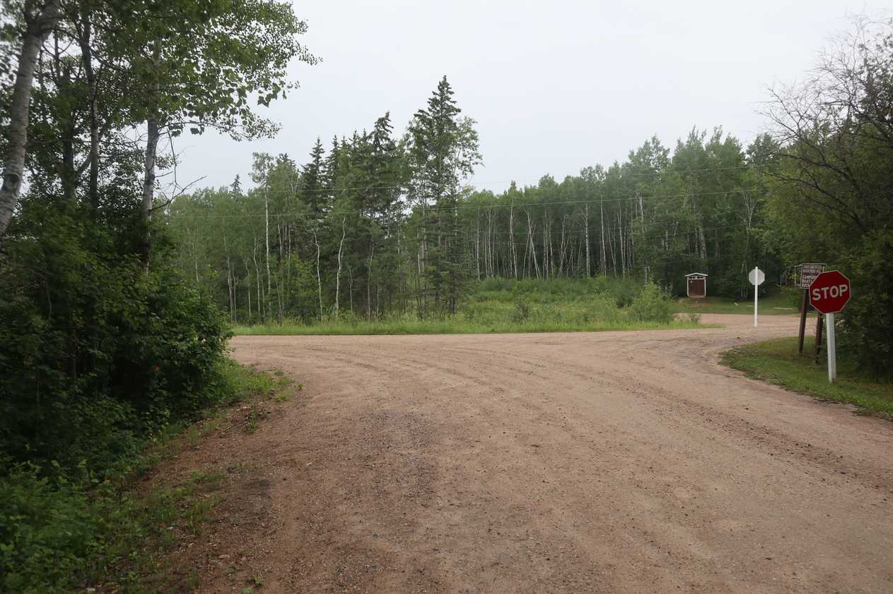
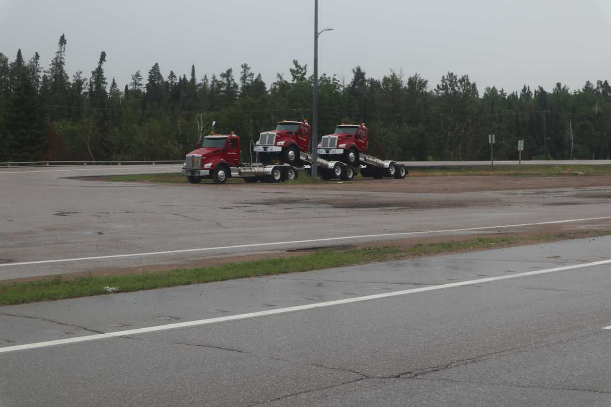
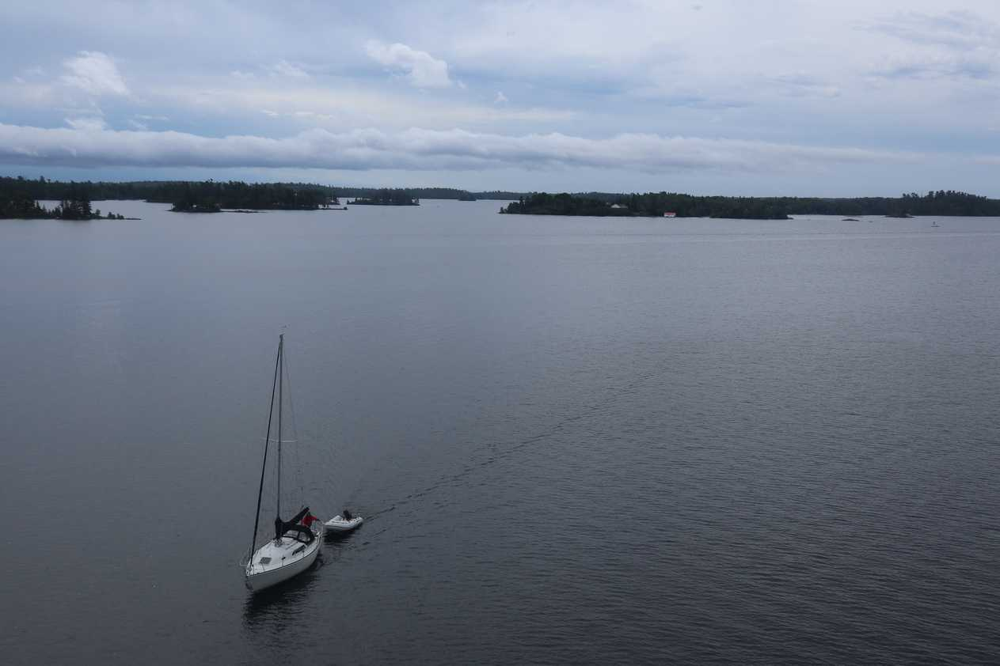
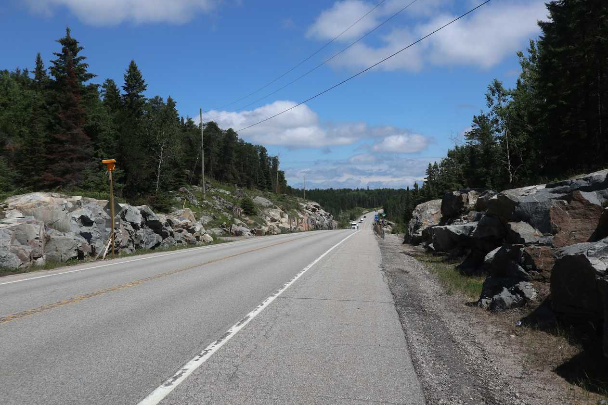
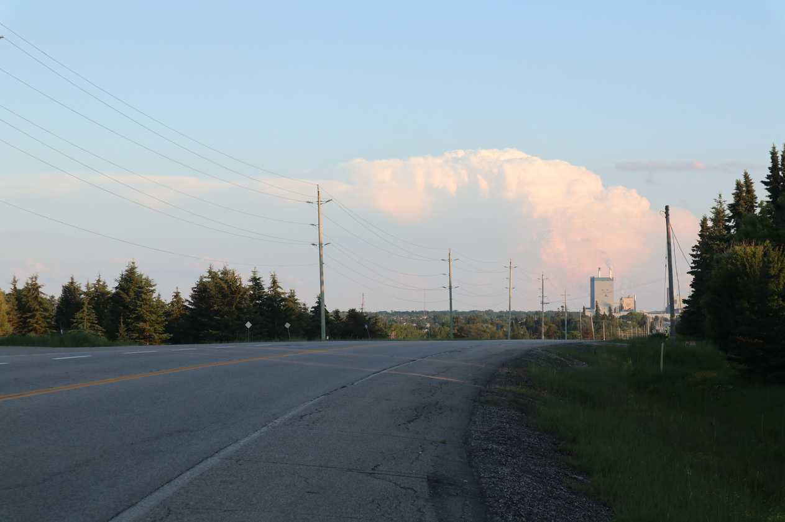
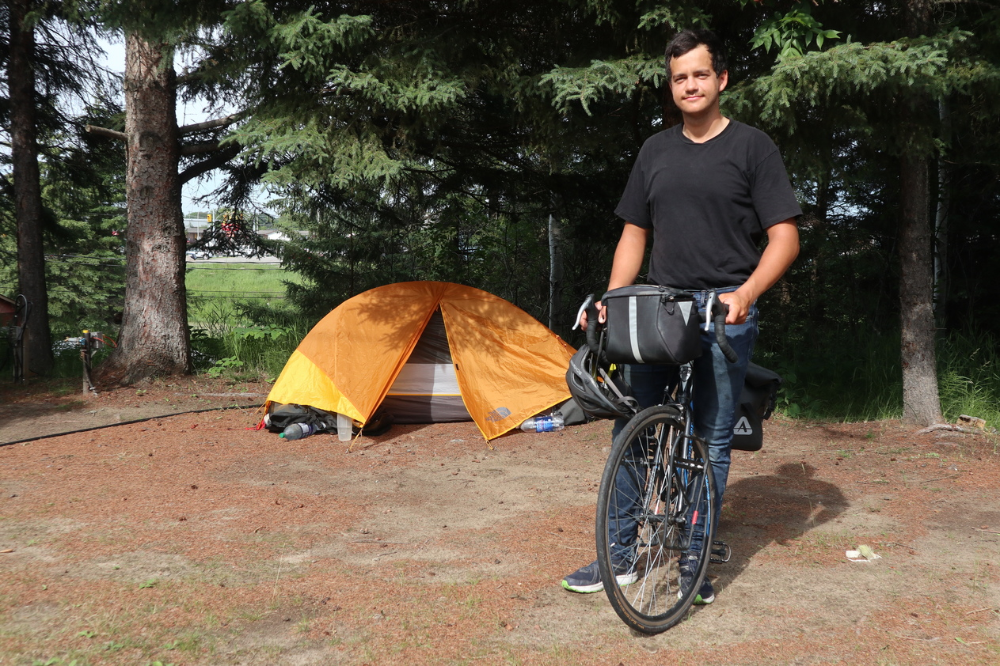
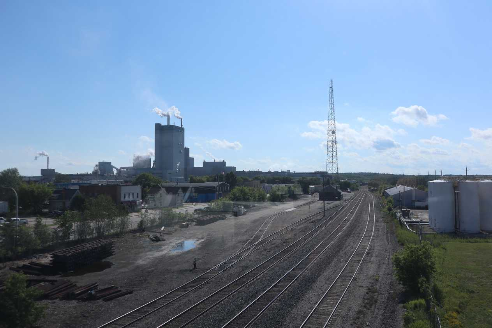
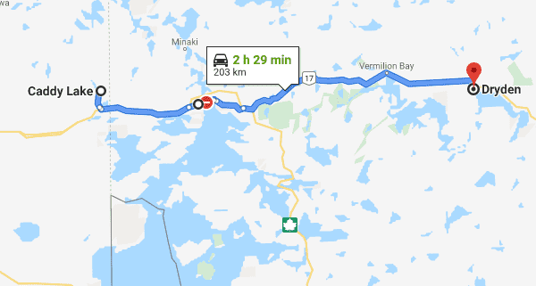

Heading out of Caddy park towards Ontario.
As I started biking towards Ontario, the rain picked up. When I biked past the Ontario welcome centre, the rain was pouring harder then I have ever seen it during my trip so far. Visibility was significantly reduced and I had to bike slowly as I was afraid of slipping. The cars and trucks left large clouds of spray.

Rare picture showing how trucks are made.
The rain did not ruin my mood as I was so excited to be in Ontario. I was in my fifth province after 20 days of being on the road. However, Ontario is no ordinary province...it's my home province! I recognized the blue exit signs, the road distance markers and the hills. I felt like I had the home ice advantage and was laughing and shouting with joy through the rain. Progress!
When I made it to Kenora, the rain stopped. Kenora is a touristy town with lots of money in it. After biking through parts of Manitoba, it was quite the contrast. The distance between towns in northern Ontario are large and you have to make sure you have enough water.

Picture on the bridge near Kenora.
I left Kenora and planned to reach Dryden. The Ontario hills were just starting up and I wasn't sure how much more difficult it would be to bike.

Hills are lots of fun and not bad at all. You get into the rhythm of climbing that hill and conquering it, stretching your legs for a bit and then building up the speed on the flat and downhill for the next hill. This rhythm goes on and on and you lose track of time as you cover long distance.
At Vermilion Bay I had delicious poutine!

Dryden and its paper mill in the distance.

Next day I decided to take a rest. My excuse was that the forecast promised thunder and rain all day. However, the real reason was that I was exhausted after the past few days of crushing and needed a break. The next day it was hot and sunny- the forecast was wrong. The one thing I learned about the weather forecast on the bike trip is that oftentimes it is wrong. This picture was taken by an older person who with his sun glasses looked like an Italian mafia boss. He was travelling in an RV with his wife. We talked about cameras and their battery life - he travelled a lot in remote areas and needed a good one. He mentioned that he saw a large group of bicyclists about two days worth of riding ahead of me without panniers. Were those the same bicyclists I passed near Golden, BC? How did they get ahead of me? Maybe it is another group. I never figured it out. One the road you constantly hear legends of bicyclists. "Did you hear about the bicyclist biking with a guitar?" "Did you see a guy recently...it's his tenth time crossing Canada" "I've messaged a guy on instagram who was has biked across Northern Canada - he had people threaten to steal his bike and had people stalk him for days"

Dryden was a bit depressing - although I was probably comparing it too much to Kerona.
The next day I was biking to the grocery and got a flat tire. The traffic pushed me to the edge of the road and I biked through a really dirty patch of road.
